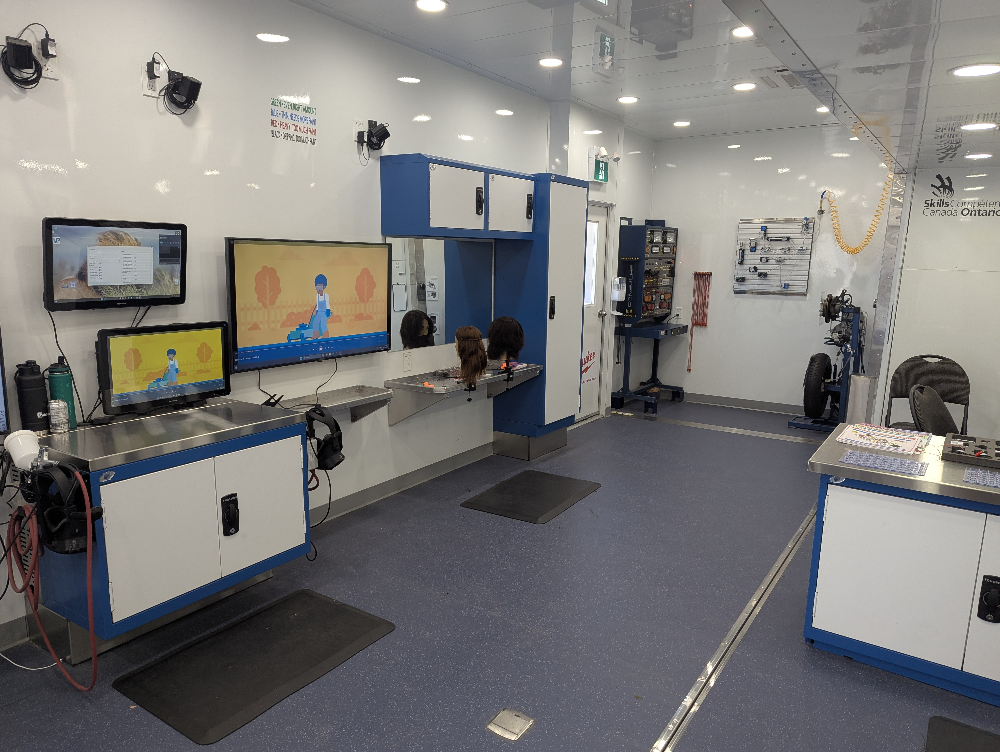
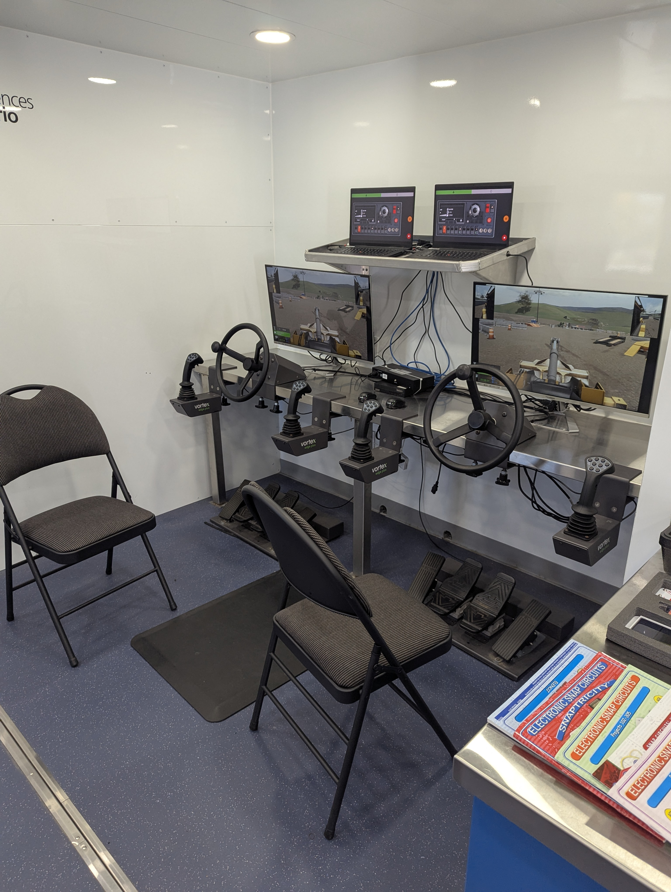
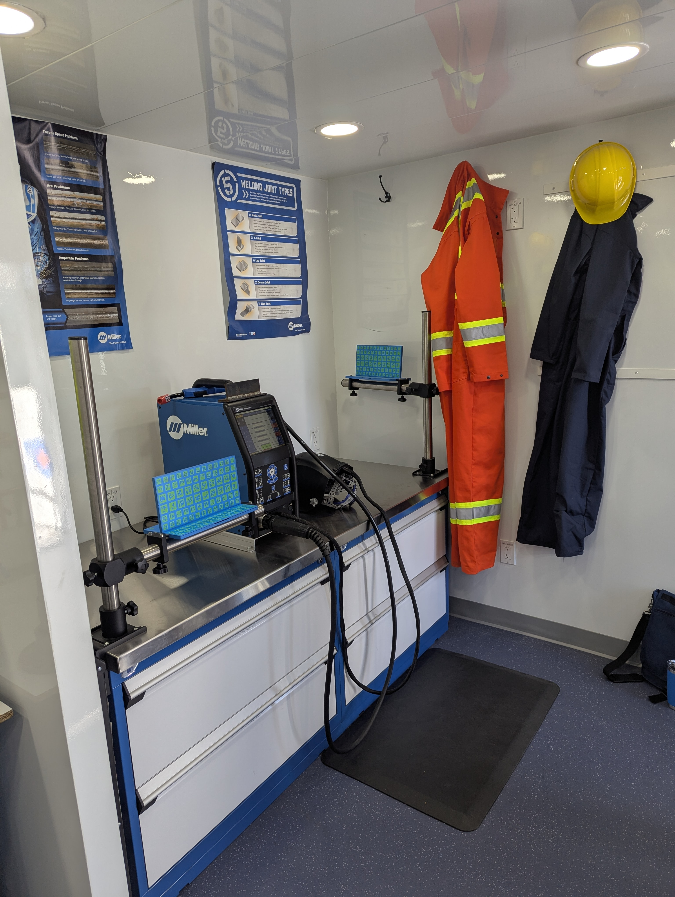
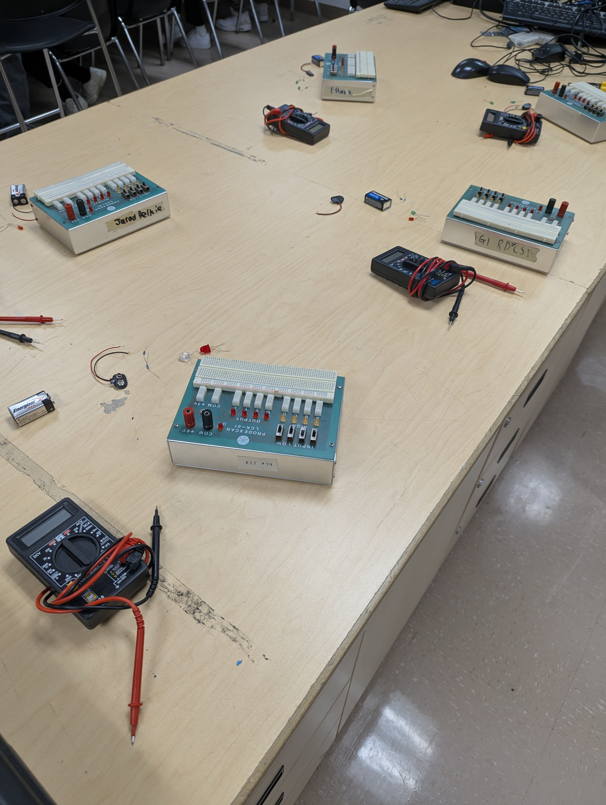
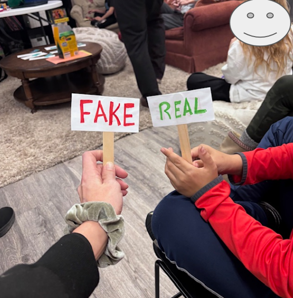
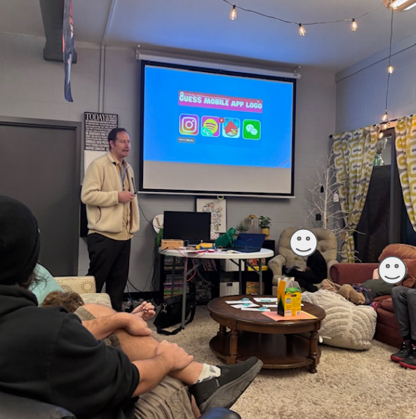
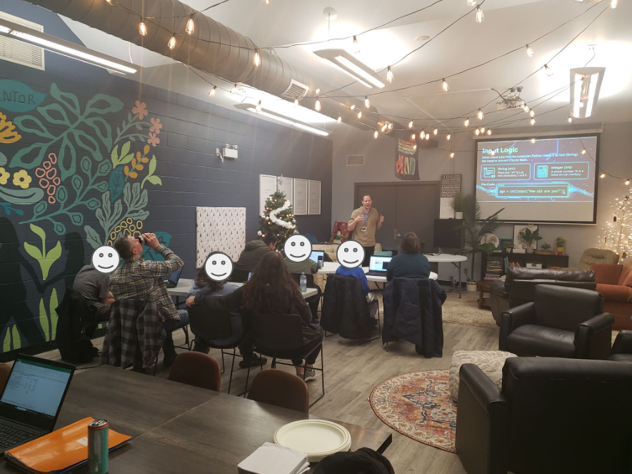
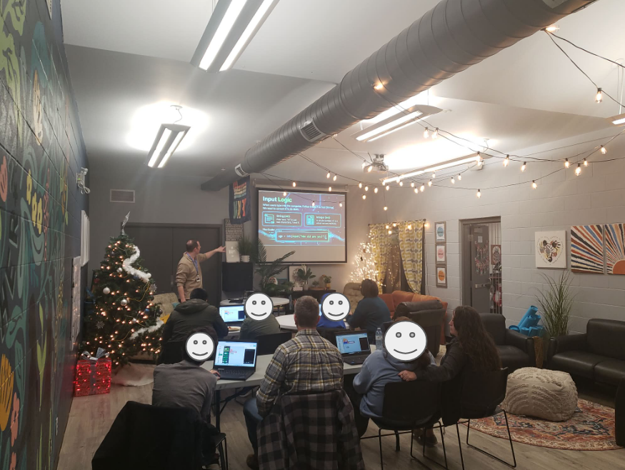

Featured Case Studies
Ontario Skilled Trades Truck
Context: Grade 7/8 visitors explored pathways in skilled trades and technology.
What I Did: Supported station facilitation and guided simulator participation.
Outcome: Students made stronger links between school learning and real careers.
Drone Event in Wyoming
Context: Holy Rosary Grade 7/8 students engaged in applied drone learning.
What I Did: Helped organize, host, and manage the event logistics and activities.
Outcome: Learners practiced safe flight behaviors in a structured challenge setting.
SLP Youth Technology Workshops
Context: Community youth needed approachable entry points to computing.
What I Did: Co-delivered sessions in cybersecurity, robotics, and Python.
Outcome: Participants gained confidence with real-world technology concepts.
Reflections & Monthly Updates
October 2025 — Website Setup
Type: Reflection — Website created and sample artifacts collected.
December 2025 — Early Practicum Notes
Type: Reflection — Observations from in-school visits and initial teaching attempts.
In-School Activities
Ontario Skilled Trades Truck — Driving Simulator
Assisted with the Ontario Skilled Trades Truck, demonstrating the driving simulator and other interactive activities for Grade 7 and 8 students from nearby schools.




TAS1O Practicum — Series and Parallel Circuits
Classroom experience teaching Grade 9 students series and parallel circuits during practicum placement at St. Patrick's Catholic High School.

Drone Technology & RPAS Certification Workshops
Drone Technology & RPAS Certification Workshops (Grade 8 & SHSM)
As a supply teacher, I designed and facilitated interactive drone workshops across multiple elementary schools and one secondary school.
For Grade 8 learners, I introduced Canadian aviation regulations, drone career pathways, and safe operation through a timed obstacle course.
At the secondary level, I worked with Grade 11 and 12 SHSM students on assembly, advanced flight practice, and preparation for the Transport Canada Basic Remote Pilot License.
I also helped organize, host, and manage a drone event in Wyoming with the Grade 7/8 group from Holy Rosary Catholic School.
Service Learning Project (SLP) — Workshops
Three workshops delivered in collaboration with Big Brothers Big Sisters Sarnia–Lambton. Each card includes three photo placeholders you can replace with your own images.
CyberSmart Kids — IoT, Cybersecurity, and AI
Introduction to safe, smart technology use: connected devices, basic cybersecurity habits, and an age-appropriate overview of AI.
Robotics and IoT
Hands-on robotics activities combined with simple Internet of Things concepts: sensors, basic control, and real-world connections.


Python Programming
Beginner-friendly Python session: variables, loops, and problem-solving through simple projects that build confidence and curiosity.

